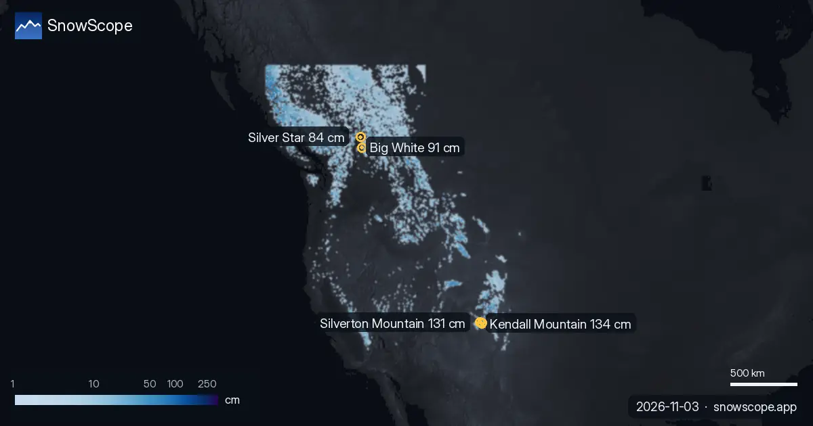

Early-season snow check, 3 November: Western Canada and the US West lead
Right now the deepest snow is in North America. Our snow model puts 329,280 km² of Western Canada under snow today, and a storm in the US West left up to 26 in (66 cm) in 72 hours. In the Alps the snow is still thin and high, but new snow is forecast for several French resorts this week.
See the live snow forecast for Bonneval-sur-Arc in the SnowScope appSnow depth, powder alerts and the 3D map, free.
US West: a storm brings the deepest snow
The deepest resort snow today is in the US West. After a storm, Kendall Mountain has about 53 in (134 cm) on its upper slopes, Silverton Mountain 52 in (131 cm) and Telluride 51 in (130 cm), according to our snow model. Most of it is new: these three resorts got between 62 and 26 in (66 cm) in the last 72 hours.
Snow stations confirm the storm. On 1 November, the Red Mountain Pass station at 11,060 ft (3,371 m) measured 24 in (61 cm) of snow on the ground, with 11 in (28 cm) of new snow in 24 hours, and Rat Creek at 11,680 ft (3,560 m) measured 26 in (66 cm). These are measurements at one point; the resort numbers are model estimates for the area.
The snow cover is already shrinking at lower heights: in the US West it went from 102,441 sq mi (265,320 km²) on 1 November to 95,630 sq mi (247,680 km²) today, and our forecast gives 78,313 sq mi (202,830 km²) on 6 November.
| Region | Snow-covered area | Resorts with snow | Deepest resort |
|---|---|---|---|
| Western Canada | 329,280 km² | 51 / 57 | Big White · 91 cm |
| US West | 95,630 sq mi (247,680 km²) | 143 / 195 | Kendall Mountain · 53 in (134 cm) |
| Alps | 25,190 km² | 584 / 1178 | Bonneval-sur-Arc · 55 cm |
| Pyrenees | 3,970 km² | 40 / 53 | Estació d'esquí de Port-Ainé · 17 cm |
| Atlas (Morocco) | 750 km² | 1 / 3 | – |
| US Northeast | 139 sq mi (360 km²) | 15 / 111 | Tuckerman Ravine · 4 in (9 cm) |

Western Canada: the widest snow cover, and well above normal
Western Canada has the largest snow cover of all our regions: 329,280 km² today, with snow at 51 of 57 resorts. Big White leads with 91 cm, ahead of Silver Star with 84 cm and Harper Mountain with 74 cm.
This is an unusually good start. At 1,891 m on Big White, our model has 39 cm of snow today. That is deeper than on this date in 43 of the past 46 winters; the usual depth here on 3 November is 13 cm.
More snow is on the way for other resorts. In the next three days our forecast gives 33 cm at Ski Callaghan, 31 cm at Mount Cain Alpine Park and 25 cm at Whistler Blackcomb. In the US West, Mt Baker could get 11 in (28 cm). Big White expects only 2 cm.

Alps: thin snow up high, new snow on the way
In the Alps, 584 of 1,178 resorts have some snow today, but it is thin. The deepest is Bonneval-sur-Arc in France with about 55 cm on its upper slopes, then Schnalstal (Austria / Italy) with 48 cm and La Grave with 46 cm.
Lower down there is very little. At 2,371 m at Bonneval-sur-Arc our model has only 2 cm, below the usual 10 cm for this date: only 14 of the past 46 winters had less snow there on 3 November.
The snow-covered area fell from 37,780 km² on 1 November to 25,190 km² today, and our forecast brings it back to 28,740 km² on 6 November. The biggest totals in the next three days are in France: Chabanon 37 cm, Dévoluy 34 cm, Chaillol 33 cm and La Grave 28 cm.
Stations show the same picture. On 2 November the Plattkopf station at 2,220 m measured 30 cm of snow, with 8 cm of new snow in 24 hours, and Rosskar at 2,680 m measured 32 cm.
Pyrenees, US Northeast and the Atlas: first flakes
The Pyrenees got fresh snow. Masella had 10 cm in the last 24 hours and now has about 15 cm on its upper slopes; Estació d'esquí de Port-Ainé has 17 cm and Cauterets Cirque du Lys 16 cm. The Núria station at 1,971 m measured 8 cm on 2 November.
In the US Northeast the early snow is going: 15 of 111 resorts have a little snow today, with at most 4 in (9 cm) at Tuckerman Ravine, and our forecast shows none left on the map by 6 November. In the Atlas (Morocco), our model shows snow at only 1 of 3 resorts, and only a few centimetres.
Tips for skiers
- Snow on the map does not mean a resort is open. Check the resort's own website for lifts and opening dates before you travel.
- Early-season snow is thin. Stay on open, groomed pistes: rocks and grass can be just under the surface.
- In the US West the new snow after the storm lies on bare ground and the wind moves it. If you go off-piste or ski touring, read the official avalanche bulletin first.
- Planning a weekend in the Alps? Watch the French resorts with the biggest forecast, like Chabanon, Dévoluy and La Grave, and check the map again before you go: forecasts change.
- Get a powder alert in the SnowScope app to know when your resort gets fresh snow.
About these numbers
Resort snow depths are the deepest snow on the resort's upper slopes from the SnowScope snow model (about 1 km, run of 3 November); they are estimates for an area, not a measurement at one point. Station values are measurements on the date shown. Forecasts can change. Always read the official avalanche bulletin before going off-piste.
Official avalanche bulletins: EAWS (Europe) · avalanche.org (US) · Avalanche Canada
Cite this report
For research, teaching or the press: the numbers and charts are free to reuse under CC BY 4.0 with this citation.
SnowScope (2026), Early-season snow check, 3 November: Western Canada and the US West lead, https://snowscope.app/blog/en/2026/11/early-season-snow-check-3-november-2026.html, accessed 2026-11-03
SnowScope (Atlas Labs). (2026, November 3). Early-season snow check, 3 November: Western Canada and the US West lead. SnowScope snow reports. https://snowscope.app/blog/en/2026/11/early-season-snow-check-3-november-2026.html
BibTeX
@misc{snowscope2026earlyseasonsnowcheck3nov,
author = {{SnowScope (Atlas Labs)}},
title = {Early-season snow check, 3 November: Western Canada and the US West lead},
year = {2026},
month = nov,
howpublished = {\url{https://snowscope.app/blog/en/2026/11/early-season-snow-check-3-november-2026.html}},
note = {Published 2026-11-03 15:01 UTC; accessed 2026-11-03}
}· CC BY 4.0 · Methods, data and tools →
Bonneval-sur-Arc: snow and temperature by height, this winter vs last (tools) →
More snow reports

The most snow in Western Canada is at Silver Star: about 112 cm on the upper slopes, according to our snow model. Next come Big White with 90 cm and …

We combined today's snow depth, the new snow of the last 72 hours and the forecast to pick Masella, Cauterets Cirque du Lys and Aramón Cerler. Of …

The most snow in the US West is at Kendall Mountain: about 53 in (134 cm) on the upper slopes, according to our snow model. Next come Telluride with …